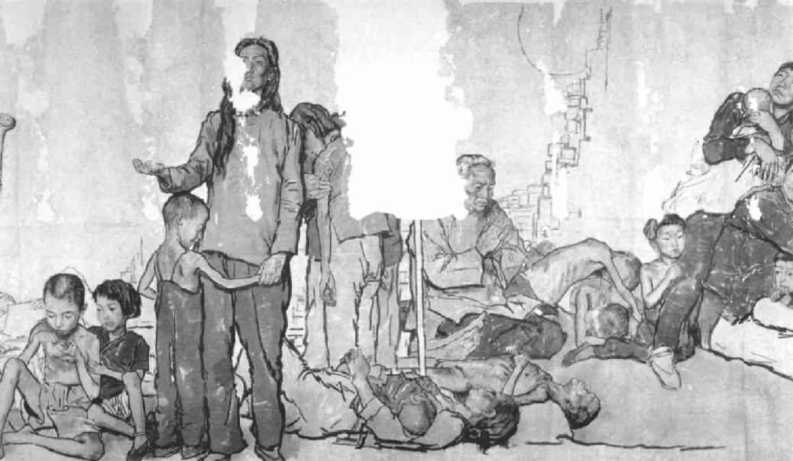

第九章 人的恶行
现在朝廷上平静了，死一般地平静。苏东坡携眷离都之时，当年仁宗在位年间的名臣儒吏都已清除净尽，四散于外地。欧阳修正退隐于安徽阜阳，苏家世交张方平家正在河南淮阳。
苏子由去年即被神宗任命为淮阳州学教授。苏子由也有其特点，不像兄长子瞻那么倔强任性，但一直洁身自好，使清誉不受玷辱，能照顾自己免于危害，所以挑选一个平安卑微的职位，与贤士大儒相往还。后来张方平辞官归隐，迁居河南商丘，或称“南京”，子由请调至商丘为官，后几年，苏东坡往返京都之时，总是路宿张宅，向张方平请求指教，如对叔伯长辈。司马光与吕公著现在西京洛阳，过着退隐的生活。吕诲病重将死，死前，他呈给皇帝一个难题求教：
臣本无宿疾，遇值医者用术乖方，……妄投汤剂，率任情意，差之指下，祸延四支，浸成风痹……非只惮盩之苦，又将虞心腹之变。……虽然一身之微，固未足恤，其如九族之托，良以为忧。
贤德的老宰相富弼不能平安度日，他已经降职为亳州太守，当道认为他推销青苗贷款，办理不力。并且他还胆敢上奏折称，此法行“则财聚于上，人散于下”。这时王安石的手下邓绾突然十分活跃起来，一看有机会可以效忠主子了，他向主子说可以控富弼阻碍新政之罪，于是宰相的显爵全被剥除，调至另一地去任太守。但是王安石于愿未足，对皇帝说富弼所犯之罪，情如尧舜时之“四凶”，倘若只将他的宰相官爵褫除而已，何以遏阻其他奸邪之辈？皇帝对王安石所奏置之不理，任由富弼去担任那一卑小的职位。富弼在往就新职途中，路过南京，访问老友张方平。
老相国感慨系之，他向张方平说：“知人甚难。”
张方平说：“你说的是王安石吗？我认为了解他并不难。当年我有一次和他共办乡试，他就把一切老规矩都弄得乱七八糟，我就把他调离我的部下，再不理他。”老宰相自觉难堪，又启程赶路。在老年，他常常仰望屋顶，默然叹息。
苏东坡离京之前，京中曾发生一次暴乱。在去年冬天，保甲制便已实行，新兵在乡村受军事训练。新兵疑心受训的用意，以为会调离家乡，开至北方去和外族打仗，于是临近京都的村子里发生了示威抗议。骚乱之发生还另有原因。当时官方命令农人自备武器，其实也只是弓箭而已。父子相拥而泣，村民有断腕以躲避征调者。由于这次暴乱，王安石就要丢掉他最后的一个朋友韩维，因为韩维正是那一地的太守，他奏明暴乱经过，呈请暂将军训延缓，至深冬举行，因那时农忙已过，空闲较多。就因此一表章，连韩维也遭罢黜了。
要使王安石失势，还须上天显示昭然可见的征兆，需要宫廷门吏的仁行义举。在神宗熙宁五年（一〇七三年），西岳华山山崩。皇帝至为慌乱，依照习俗，乃迁居另一宫殿，以示敬仰神祇，并下令以粗粝三餐上进。此外，自次年夏季到来年春季，一直干旱不雨，皇帝至为忧愁，不知如何是好。他问王安石，王安石回答说：
“旱涝乃是天灾，在尧汤之世也曾发生。吾人之所能为者只是力行善政而已。”皇帝说：“我所担心的也是此事，恐怕我们所行的不是善政啊。我听见关于商税法的怨言甚多。宫里人人都听说了，连皇后、太后也听说了。”
另一个阁员大臣冯京也在场，他也说：“我也听说了。”
王安石回答说：“为什么我没听人说？冯大人之所以听说，是因为所有发怨言不满的人都奔赴你的四周了。”
现在命定要成大事的渺小人物快要出现了。他叫郑侠，就是画难民图的皇宫门吏。他呈给皇帝的难民图上，画的是戴着脚镣的难民在砍树挣钱，用以付还官家的青苗贷款。郑侠还随图附上一篇短文：
窃闻南征北伐者，皆以其胜捷之势、山川之形，为图来献。料无一人以天下之民质妻鬻子、斩桑坏舍、流离逃散、遑遑不给之状上闻者。臣谨以逐日所见，绘成一图，但经眼目，已可涕泣。而况有甚于此者乎！如陛下行臣之言，十日不雨，即乞斩臣宣德门外，以正欺君之罪。
皇帝把画卷带到寝宫，给皇后和皇家别人看。先说话的是皇帝的祖母：
“我听说百姓为了助役钱和青苗贷款，其苦不堪。我觉得我们不应擅改祖制。”皇帝回答说：“但是实行新法也是为民谋福，并无害民之意。”
太后又说：“我知道王安石自有大才，但是已然树敌甚众。为了他自己好，你还是暂时把他的职务中止吧。”
皇帝说：“我发现在满朝大臣之中，只有王安石愿意身当大任。”
皇帝的弟弟歧王这时正立在一旁，他说：“我认为你应当听听祖母老人家刚才说的话。”
皇帝突然大怒，说：“好！好！我不会治国，你来接。”
《流民图》（部分） 国画 蒋兆和 1943年
蒋兆和的《流民图》作于抗日战争期间的1943年，与郑侠在1074年所作的《流民图》相比，虽然处于不同的时空，但作品所展现的流离失所的民众饥寒交迫的境况同样震撼人心。
歧王说：“我不是那个意思。”
大家僵住，静了片刻，然后皇太后说：“这些乱子都是王安石闯的，你要怎么办呢？”
第二天早晨王安石罢相，但吕惠卿和邓绾仍然在位。皇帝决定把商税法、青苗法、免役法、保甲法、方田均税法，一共十八种新法，终止推行。
天开始下雨，老天爷高兴了。
但是王安石的时刻还未终了，依法规门吏郑侠还得遭受弹劾。郑侠第一次循正规献画时，宫廷的官吏拒而不受，说以官卑职小，无权与皇帝上奏章。郑侠乃到京师城外的官差站，因为此系非法利用官差制度，郑侠要在御史台受审。
审问的结果如何，历史上并无记载。但是次年正月，郑侠又将一画册呈献给皇帝，名为《正直君子邪曲小人事业图》。所绘乃唐代贤臣奸佞图像，虽未指明系宋代当时权要，而前代奸佞之辈所做所为却与当代奸人有其相似处，一看便知，绝不致误，即使容有含混难解之处，画册上的故事也可以祛除心中的疑问。与这本画册同时进献的还有一个奏章，推荐一位贤人出任宰相，因为此时王安石已遭罢黜。现在当政的是吕惠卿，邓绾已然改向吕惠卿效忠。在这两个小人狼狈为奸之下，郑侠被贬谪到偏远的广东去。
在郑侠离京之前，一位御史前去看他，对他说：“所有御史对朝政都钳口不言，独君一人挺立不屈，做此殊死战，殊为可敬！”而今似乎全御史台监察朝政之重任，移到一宫廷门吏的肩上了。那个御史于是交给他包好的两卷名臣奏议，都是弹劾御史台里当权的小人的文章，并且对他说：“我把这些资料交托与你，务必妥为保管。”但是吕惠卿由于他那颇有效能的侦察网获得了这项消息，他派舒亶在路上追到郑侠，搜查他的行李。按照此两册上曾经批评朝政的人名，吕惠卿、邓绾、舒亶乃按部就班地逐一迫害那些人，并予以监禁。吕惠卿打算把郑侠判处死刑，但是皇帝阻止道：“郑侠谋国而不谋身，忠诚勇气，颇可嘉许，不可重罚。”所以郑侠仍准径赴流放之地，未予阻挠。
苏东坡去世之后，一黄某获得苏东坡一珍贵的手稿，其中有苏东坡下列的名句：“处贫贱易，处富贵难。安劳苦易，安闲散难。忍痛易，忍痒难。人能安闲散，耐富贵，忍痒，真有道之士也。”每一个革命党在未得势之前，能表现出最大的力量与团结；但在既已得势，既已清除反对力量之后，则开始由内部的纷争而分裂，终至崩溃。在力图推翻别人时，人性中的精华发挥作用；在企图控制别人时，则人性中之糟粕发挥作用。只要情况顺利，这群小人各有肥缺在手，邓绾、吕惠卿、曾布之间则忙得无空闲自相争吵。但在王安石一旦失势，情况开始逆转，此一帮派则内部失和了。
在此失和之前，内部腐坏的种子早已播下。王安石的儿子很恨吕惠卿，而吕惠卿很恨曾布。而邓绾是跟着兔子跑，却帮猎狗忙，吃里爬外，所以往后是够忙的。王安石最后只落了一个儿子。这个儿子聪明外露，古怪任性而又残忍凶暴，王氏集团许多恶行他当负其责任。现在他已长大成人，已经开始管理家中的钱财，他的叔伯不再能像往常那样乱用王安石的钱。这个权倾一时的宰相的傲慢无理的儿子以为凭态度恶劣，由他的令人厌恶，便可以显得出人头地。据说，新政初期，一天，理学家程颢正在王安石家开会。这个儿子出现了，头发散乱，赤足无鞋，手拿女人的头巾，一直走到父亲跟前，问他们正在说什么话。
王安石回答说：“我正和程先生谈论新政，我们的新政总受到别的大臣批评。”儿子一下子坐在大人坐的座位上，大笑道：“只要把韩琦和富弼的头砍下来就够了。”王安石自己为他儿子受了什么罪，随后自可看到。王家不是和睦可喜的一家人，因为这一家有两个人一直不赞成王安石的做法，特别警告王安石提防吕惠卿那个骗子。孔夫子曾说人应当“放郑声，远佞人”。有一天，王安石正和吕惠卿商讨政事，弟弟安国在外面吹笛子，王安石向外面弟弟喊道：“停此郑声如何？”弟弟应声回敬道：“远此佞人如何？”现在这一帮派很担心他们的前途。但是吕惠卿并没完全失望，而且正好看到自己得势之日已近，取王安石而代之的机会到了。世界上有些人能随意操纵眼泪，吕惠卿和邓绾便是此等人。他俩去见皇帝，以一副极为动人的样子在皇帝面前哭，好像他们想到国家的前途就悲从中来。应用他们动人的口才，又把皇帝拖回了原来那条老道路，而吕惠卿也官拜了宰相之位。
现在争吵真正开始了。全国的市易务官吕嘉问这时遭到弹劾。市易务的滥权枉法的报告，自然传到皇帝耳朵里。皇帝问王安石，那时王安石还在京都。
王安石回奏道：“嘉问一向认真守法，自然树敌甚众，所以才受攻击。”
皇帝说：“但是朝廷从商税方面收到的钱的确很少，而且我很不喜欢官家卖水果、卖冰、卖煤这等事，对朝廷太不体面。”
王安石回奏道：“陛下不必为这些小事操心，这是低级员司管的事，皇帝只要留心朝廷的主要政策就行了。”
皇帝回答道：“即便如此，可是为何朝廷上人人把这种措施看作暴政呢？”
王安石回答道：“请把那些人的名字交给臣。”
这些肮脏龃龉的口角争吵，不值得详谈。实际上的内幕是市易务官吕嘉问身居要津，开始公然蔑视条例司，污辱了一个叫薛向的官员，而曾布却偏袒着薛向，攻击吕嘉问，吕嘉问因而免职。吕惠卿和曾布奉命调查此一案件。吕和曾二人一向交恶，二人与王安石的关系正如斯大林与托洛茨基之与列宁一样。在调查期间，吕惠卿开始攻击曾布，曾布也开始攻击吕惠卿，曾布垮台。
这是纠纷的开端。吕惠卿而今成了朝廷唯一的魁元，他不但抓住郑侠案件的机会罢黜了王安石的弟弟王安国，又借着无处不在的邓绾的帮助，想把王安石牵连在山东省一个谋反案件中，其实那是由一个亲王发动的。王安石被控与叛逆串通，因为他与一逆贼是朋友。还有另一个阁员，名义上也是宰相，他与吕惠卿极不相容，想使王安石官复原职，用以抑制吕惠卿。他除去请皇帝罢黜吕惠卿，重用王安石之外，又送一密函与王安石。控告谋反自然事极严重，王安石以七日之内，火速进京。
王安石与谋反一案确无干系，在神宗熙宁八年（一〇七五年）二月，又重任宰相。这使邓绾有几分尴尬，他只好连忙背弃吕惠卿，又投入王安石这边来。为了重获王安石的青睐，他决定出卖吕惠卿。邓绾背着王安石，暗中和王安石的儿子勾结，控告吕惠卿勒索华亭商人五百万钱。朝廷降吕惠卿官，出为太守。邓绾以吕惠卿如此轻易逃过，心有不甘，乃联合吕嘉问请求重新审问，将吕惠卿羁押在京师的御史台监狱中。
一度权势炙手可热的小人权要一一遭到罢黜，邓绾也非例外。邓绾依然是精力充沛，他亲眼看到吕惠卿垮台，又看出皇帝对王安石也日形厌倦。他以天纵阴谋之才，洞烛机先，心想下一个身揽大权的人必是王安石的儿子和女婿。他上一表章，请皇帝将此二人升迁重用。但是王安石和皇帝对邓绾的变节背信早已厌腻，不但不心存感激，反将他罢官斥退。邓绾现在对人性应当是失去了信心吧！
吕惠卿在御史台监狱等待审判之时，他对王安石发出了最后的一击。原来那些年他保存了王安石的一些私人信件，以备敲诈之用。现在他把这些信都呈交给皇帝，控告王安石在皇帝背后图谋不轨，因为有几封信上有“无令上知此一帖”。皇帝对这些纷乱如麻的事早已厌恶，而今在这些信上的发现，真使皇帝对王安石第一次发了脾气。王安石痛骂自己的儿子，不该背着他胡乱攻击吕惠卿。他儿子显然不知道吕惠卿手中藏有这些信，并且握有他父亲的把柄，深悔自己行动卤莽。受父亲斥责之后又心中憋气，立刻病倒，不久背上生出了恶疮。王安石一向信佛。他请和尚诵经，请医生开药，但均无法救儿子一命。儿子王秀之死，是老相国的一个严重的打击。这位相国对政治与人生的虚幻，大彻大悟了，他感觉厌倦，呈请辞官归隐。皇帝允许他在熙宁九年(一0七六)十月辞去职务，但仍保有若干最高爵位，王安石并非遭受罢黜。数年之后，有人在金陵附近的乡间，看见他骑着驴，嘴里喃喃自语，听不清说些什么。